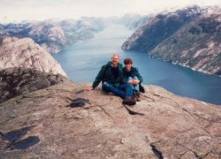

Für weitere Informationen zu Wanderwegen und gegenden fragen Sie uns! Wir haben sowohl jahrelange Erfahrungen als auch ist
es uns möglich, einschätzen, welche Wanderstrecke zu Ihnen passen könnte und was für Sie zumutbar wäre. Wir können auch mit
Landkarten weiterhelfen.